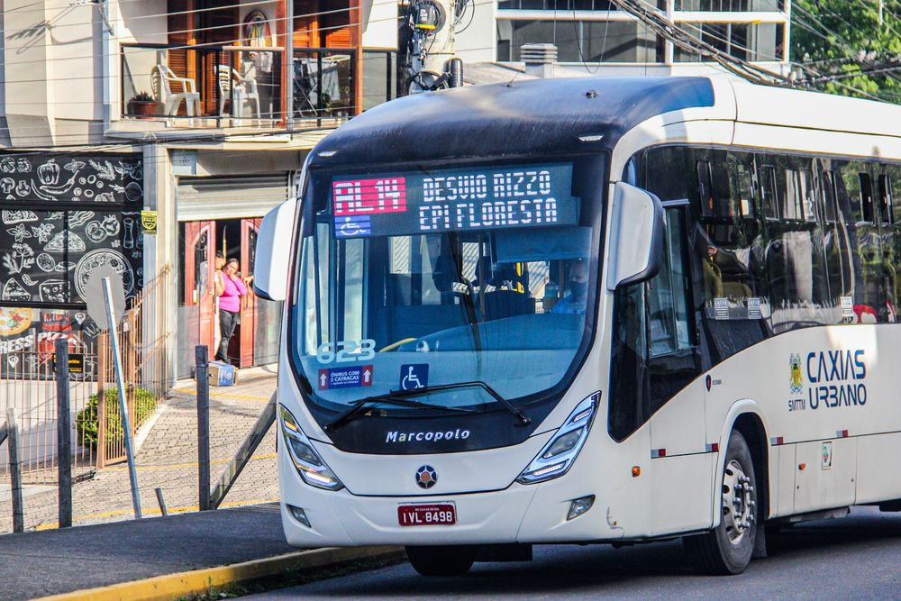
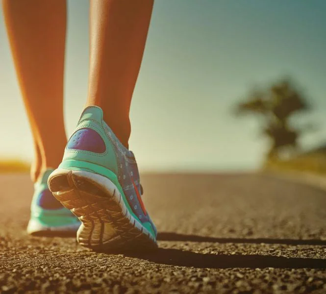
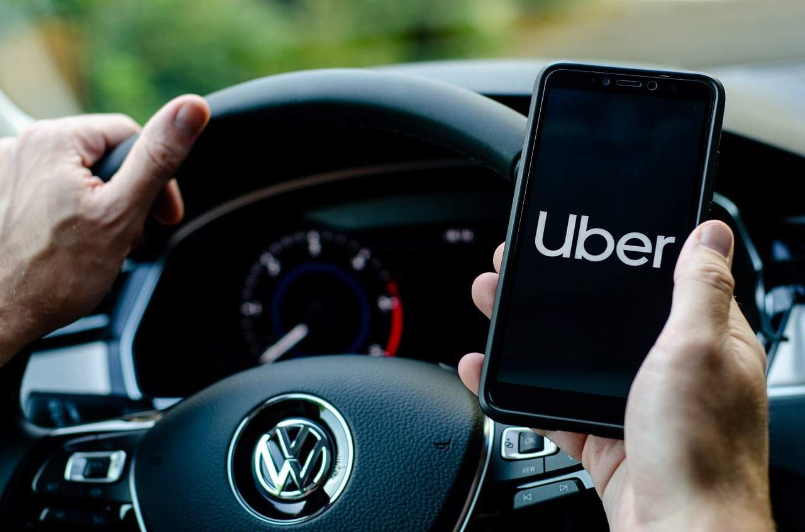

A mobilidade urbana refere-se à capacidade das pessoas de se deslocarem dentro das cidades de forma eficiente e acessível. Ônibus, metrô, outros transportes coletivos e carros fazem parte das soluções de mobilidade.
No dicionário, mobilidade significa “facilidade para se mover”. A ideia, então, é tornar esse movimento fluido e prático. Ou, pelo menos, é o que diz a teoria. Pois na prática, cada vez mais as cidades estão perdendo a capacidade de permitir que as pessoas se movam com qualidade.
Por este motivo, o tema mobilidade urbana passou a ser repensado. Há interesse em trazer de volta o seu sentido primário e original, para melhorar a qualidade de vida das pessoas de forma sustentável.
Para atingir esses objetivos, o poder público precisa se comprometer, oferecendo à população um plano de mobilidade urbana. Ele contém as previdências a serem traçadas, que miram em um espaço público com maior qualidade de vida. Isso sim é a chamada mobilidade urbana sustentável.
Plano de mobilidade urbana é um conjunto de diretrizes pensadas para melhorar o deslocamento sustentável das pessoas em uma cidade, sempre de olho resultados positivos na qualidade de vida.
Atualmente, as cidades brasileiras podem desenvolver um plano de mobilidade urbana que tenha como base usar os meios de transporte para trazer rapidez no ir e vir das pessoas, sem agredir o meio ambiente.
As propostas do plano de mobilidade urbana visam garantir acessibilidade, segurança, eficiência, qualidade de vida, e dinamismo econômico, além inclusão social e preservação do meio ambiente. Este último aspecto é importante por diminuir impactos sobre o meio ambiente em médio e longo prazo para as cidades.
As pessoas têm que se movimentar pelas cidades para ir para o trabalho, escola e também fazer outras atividades. Dessa forma, dependendo do deslocamento, acontecem os impactos diretos e aumento dos níveis de estresse.
É visto que as cidades estão cada vez mais modernas e isso gera um crescimento constante de pessoas, tanto moradores como de visitantes. Todavia, isso dá acesso a uma quantidade limitada de serviços e recursos. E isso pode ser explicado pela mobilidade urbana.
Muitas cidades tem pouca oferta de transporte público. Por isso, as pessoas deixam de frequentar programas culturais, de buscar serviços médicos e até mesmo trabalhar em determinadas regiões.
A falta de planejamento urbano, ou solucões paleativas, geram caos nos deslocamentos diários, especialmente em horários de pico, resultando em ônibus e metrôs lotados e trânsito intenso. Um planejamento adequado, que inclua melhorias no transporte público e áreas livres de veículos, facilita a movimentação de pedestres e melhora a qualidade de vida, reduzindo filas e tempo de espera. O tempo perdido em engarrafamentos prejudica atividades cotidianas, como buscar filhos na escola e momentos em família. Para promover a mobilidade, é fundamental a colaboração entre setores público e privado, com investimento, inovações tecnológicas e políticas eficazes, visando criar um ambiente urbano sustentável e produtivo.
Para a mobilidade urbana ser sustentável é preciso passar por um planejamento urbano. Para isso, é necessário incentivar o rodízio de carros, o uso de transporte coletivo, ciclovias e de caronas coletivas.
A mobilidade urbana está ligada de forma direta ao tipo de transporte usado no deslocamento das pessoas. Todavia, se somam também a preocupação em facilitar trajetos e amenizar impactos ambientais causados por combustíveis fósseis que degradam o ambiente.
Existe também, ainda, a preocupação da integração desses transportes com outros mecanismos que facilitam o deslocamento como:
Esses incentivos ajudariam a reduzir os impactos ambientais e melhorariam a mobilidade urbana, aliviando o congestionamento causado pelo excesso de veículos. O uso de bicicletas promoveria uma mobilidade sustentável ao evitar a emissão de poluentes. Além disso, a criação de parques urbanos beneficiaria a população, oferecendo espaços para atividades físicas e descanso.
A acessibilidade envolve pessoas com diferentes necessidades, como deficientes auditivos, visuais e usuários de cadeiras de rodas, muitas das quais dependem do transporte público para ir ao trabalho e ao lazer. No Brasil, a acessibilidade é um tema frequente nas eleições, considerando que muitos brasileiros enfrentam deficiências. No entanto, apesar das discussões, as grandes cidades e o interior carecem de planejamento adequado, resultando em espaços urbanos que não atendem a essas necessidades. Isso contribui para a invisibilidade e exclusão de milhares de pessoas.
Alguns exemplos mais usados na mobilidade urbana:
|  |
Transporte Público |
Ciclismo |
|  |
Caminhabilidade |
|  |
Tecnologia |
Esses exemplos mostram a importância de um planejamento urbano que considere a mobilidade como um fator central para melhorar a qualidade de vida nas cidades.